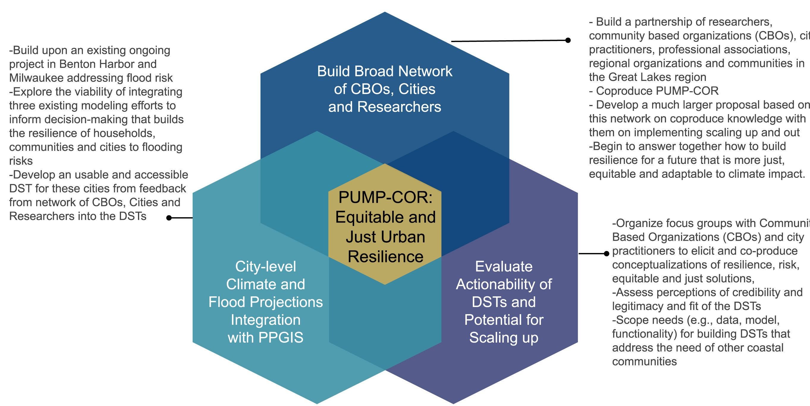

Overview
The Integrating Participatory Urban Modeling and Projections for Community-Driven FlOoding Resilience, or The PUMP-COR project, addresses coastal flooding risks in the Great Lakes region by integrating climate, hydrological, and participatory GIS models. These hazards—including flooding, stormwater overflow, and coastal erosion—are increasingly disrupting infrastructure, public health, and local economies. The project aims to produce practical information that supports community resilience and long-term economic development. It seeks to benefit all American neighborhoods, including those more vulnerable due to long-standing socioeconomic challenges.
Case Study Areas
Benton Harbor, MI
Located where the Saint Joseph and Paw Paw Rivers meet near Lake Michigan, Benton Harbor is a historically industrial city that has experienced significant economic disinvestment and urban segregation. It is prone to flooding due to its low-lying topography and aging stormwater infrastructure. The city is marked by pronounced socioeconomic disparities between itself and its twin city, St. Joseph, just across the river.
Milwaukee, WI
Milwaukee, Wisconsin’s largest city, lies on the shores of Lake Michigan and is intersected by three rivers: the Milwaukee, Menomonee, and Kinnickinnic. The city is highly vulnerable to flooding caused by intense precipitation and aging combined sewer systems. Long-standing socioeconomic challenges have contributed to uneven exposure to environmental hazards and reduced access to infrastructure improvements across different neighborhoods.
Goals
- Integrate three modeling systems to build the PUMP-COR decision support tool (DST).
- Collaborate with city staff and local organizations to define and measure resilience in ways that support diverse neighborhood needs and long-term development goals.
- Build a regional network to scale actionable knowledge across Great Lakes cities.
Expected Impacts
- Increase the usefulness and actionability of flood risk data.
- Empower communities with spatial tools to prioritize local solutions.
- Advance academic understanding of science-use and knowledge co-production.
Study Area Map
Partners and Funders
This project is supported by NSF, The GLISA Project, Wisconcin Sea Grant, and researchers from multiple institutions including the University of Michigan and University of Wisconsin–Madison. It builds on prior work to co-produce climate adaptation knowledge for community-driven resilience planning.
Project Details
The PUMP-COR project integrates climate projections, hydrologic models, and participatory mapping to support decision-making on flood risk and resilience in Great Lakes coastal cities. It builds on established modeling infrastructure to evaluate the costs and benefits of different mitigation strategies. The project team is developing a publicly accessible tool to support planning across a range of users—from city staff to residents and regional stakeholders.
Below is a conceptual model that illustrates how data and community input flow into the PUMP-COR tool design and application.
For more information, visit the NSF award page: NSF Award #2435004
Project Team
Adam Bechle
Coastal Engineering Specialist with Wisconsin Sea Grant. Adam supports communities through technical assistance and outreach on flooding, coastal resilience, and shoreline planning.
Jeremy Bricker
Associate Professor of Civil and Environmental Engineering at the University of Michigan. Jeremy’s expertise lies in hydrodynamic modeling, infrastructure resilience, and risk assessment for coastal flooding and storm surge events.
Maria Carmen Lemos
Professor at the University of Michigan’s School for Environment and Sustainability. Maria's research focuses on the co-production of knowledge and the role of institutions in building adaptive capacity to climate change.
Michael Notaro
Senior Scientist and Director of the Nelson Institute Center for Climatic Research at the University of Wisconsin–Madison. Michael specializes in regional climate modeling, lake-atmosphere interactions, and the development of downscaled climate projections for the Great Lakes.

Derek Van Berkel
Assistant Professor at the University of Michigan’s School for Environment and Sustainability. Derek leads the PUMP-COR project, combining geospatial data science, participatory GIS, and remote sensing to advance climate adaptation and resilience planning in the Great Lakes region.
Yafang Zhong
Researcher at UW-Madison. Her work is focused on generating dynamically downscaled climate projections, not the tasks listed in her square.